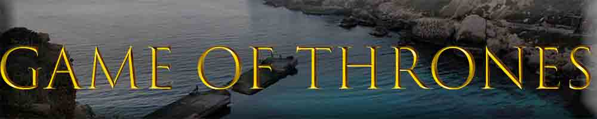

Game of Thrones Karakterer

Hjemmeside
Sesonger
Karakterer
Klikk en karakter for å få informasjon om karakteren
https://thenounproject.com/
https://en.wikipedia.org/wiki/List_of_Game_of_Thrones_characters
Av Hassan Awan